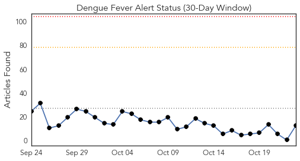
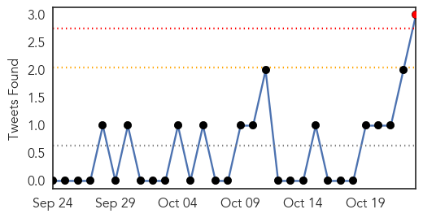
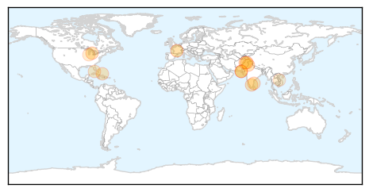
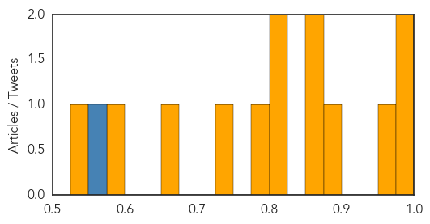

Cholera
30-Day Web Trend
3 alerts, 0 warnings

30-Day Twitter Trend
9 alerts, 0 warnings

Article Locations

Article Confidences

Top Articles:
- 0.998
- PAHO urges Member States to remain vigilant on Cholera.
- 0.997
- WHO: Nearly 5 000 cholera cases in Tanzania
- 0.997
- Nearly 5,000 cholera cases, 74 deaths in Tanzania: WHO
- 0.996
- Iraq set for cholera vaccine campaign amid fear of international spread: WHO
- 0.994
- Iraq set for cholera vaccine campaign amid fear of international spread: WHO
- 0.992
- Iraq set for cholera vaccine campaign: WHO
- 0.933
- Iraq's cholera outbreak exceeds 1,800 cases -health ministry
- 0.912
- Govt college hit by strange disease, 300 students hospitalised
- 0.890
- 300 Students Land In Hospital As Strange Illness Besiege Ekiti
- 0.863
- Thousands to Benefit from Free Rotary Health Services
- 0.863
- Rugunda: African Governments Must Embrace Digital Innovation
- 0.863
- MTN Uganda Wins Innovation Award in Y’ello Care Campaign
- 0.863
- Janet Moves to Support Karamoja’s Iconic Matany Hospital
- 0.780
- 300 students hospitalised in Ekiti over diarrhoea
- 0.567
- Nepal fuel crisis hampers relief response as winter approaches - Nepal
Top Tweets:
- 0.622
- RT: Or the Iraq War. Or the financial crisis. Or the cholera epidemic in Haiti. Or ... https://t.co/d2qlcMgoMT
- 0.557
- RT: As cholera surges in Haiti the UN's commitment to prevent it fails: https://t.co/bLYwAV27dC via
- 0.530
- Kudos to 4 including calls 4 justice from victims of cholera at top of Haiti media review! https://t.co/fm8BchV3jG
Dengue Fever
30-Day Web Trend
0 alerts, 0 warnings

30-Day Twitter Trend
3 alerts, 0 warnings

Article Locations
Article Confidences
Top Articles:
- 0.995
- Hospitals in Asia overwhelmed with growing number of dengue cases
- 0.988
- ICT Health Department says dengue larva breeding will be controlled by mid November
- 0.958
- Perpetual sting: K-P govt’s indifference towards recurring dengue virus questioned
- 0.898
- Youngster dies of dengue fever at HFH
- 0.871
- Dengue Fever Vaccine Candidate
- 0.854
- Contagion: Dengue expert urges comprehensive plan
- 0.820
- KMC’s drive begins amid growing concerns over dengue cases
- 0.812
- Tamil Nadu first in the country in organ transplantation: Minister
- 0.793
- Three-year-old Succumbs to Dengue Fever
- 0.745
- WHO supports NEMA’s relief efforts after Hurricane Joaquin
- 0.665
- Mosquito Season Safety Tips
- 0.583
- Can Yelp help in tracking outbreaks of food poisoning?
- 0.546
- Viet Nam: Healthcare improvement for community to combat to climate change
Top Tweets:
- 0.705
- Flavivirus news: 1076 Dengue Cases Reported This Week in Delhi - NDTV: NDTV1076 Dengue Cases Re... https://t.co/gM4oPA1pMS pathogenposse
- 0.673
- Flavivirus news: Perpetual sting: KP govt's indifference towards recurring dengue virus questio... https://t.co/bFTSfN5Ipm pathogenposse
- 0.501
- Flavivirus news: Dengue Fever Cases Over 26600 in Taiwan - The New Indian Express: WantChinaTim... https://t.co/w3UPWZsrcn pathogenposse